Leonardo 教學 — 介面簡介
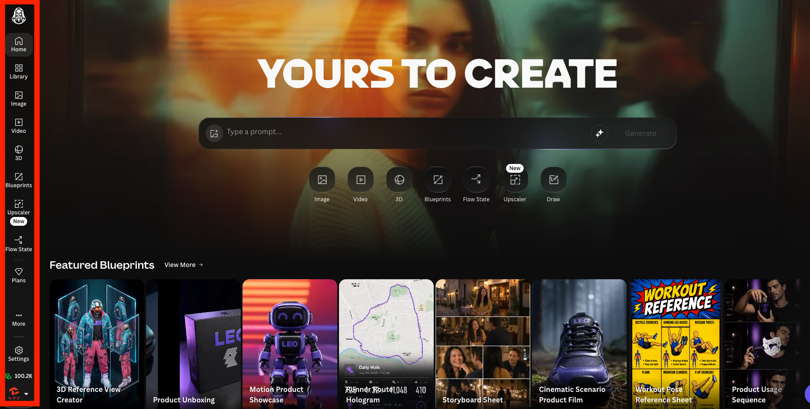
Leonardo 的介面大致分成幾個區塊，本教學會依左側選單逐項說明：
📚Library 素材庫
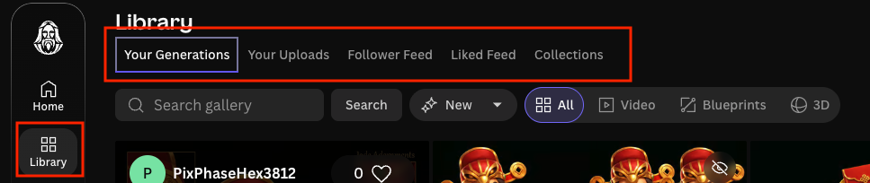
- My Generations：生成的資產存放位置
- Your Uploads：上傳的資產存放位置
- Follower Feeds：喜歡創作者的作品
- Likes Feeds：喜歡的作品
- Collections：可根據專案做資產存放的位置
點擊 image，並在 prompt 輸入 cat，便能在下方看到生成的貓咪圖片
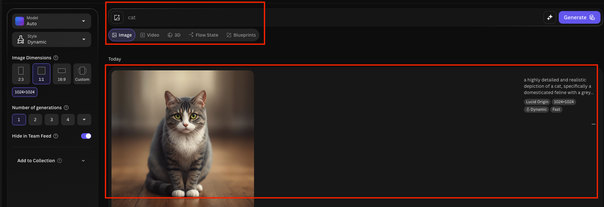
點擊 Library 的 My Generations 也會看到剛剛生成的貓咪圖片
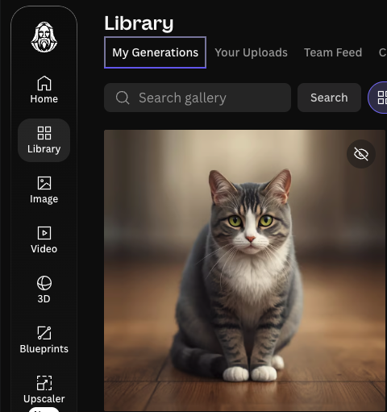
點擊 Library 的 Your Uploads，點擊 Upload an image 選擇你想上傳的資產
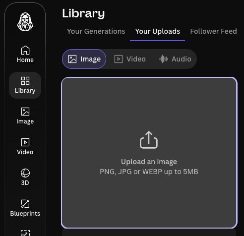
點擊 image 左側 Model 選擇 GPT Image 2（因為不一定每個模型都有 Image Reference 的功能），再點擊 prompt 左側圖標，選擇 Image Reference
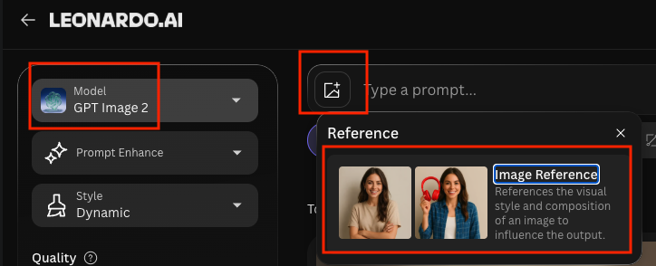
選擇 Image Reference 就可以上傳你想使用的資產了
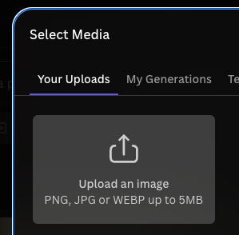
首頁往下滑會有 Community Creations 是別人的作品，點擊喜歡的圖片
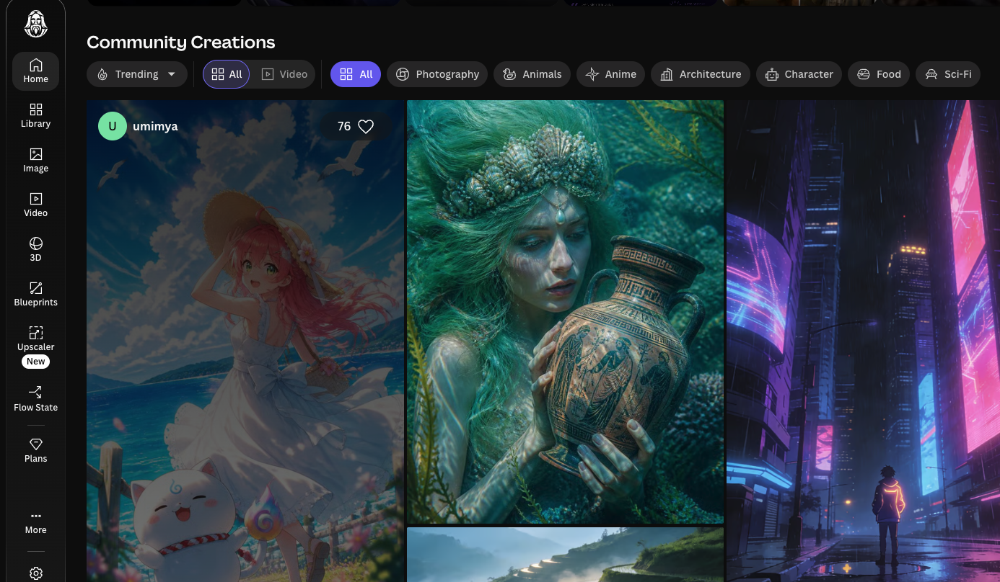
按愛心就會儲存到 Likes Feeds，點擊星星會儲存到 Follower Feeds
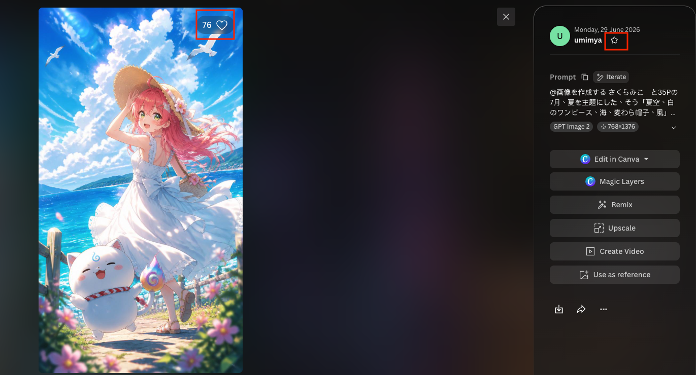
點擊 New Collection
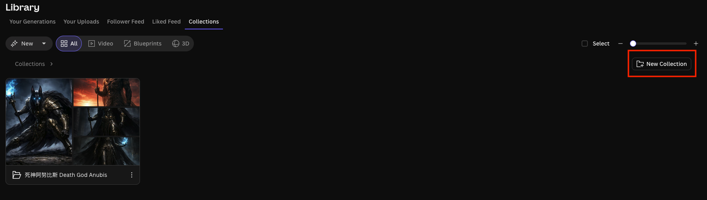
寫入 Collection 名稱，並選擇添加圖片
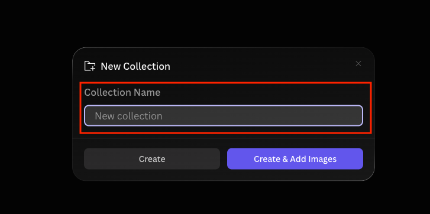
🖼️Image 生圖
生圖基礎
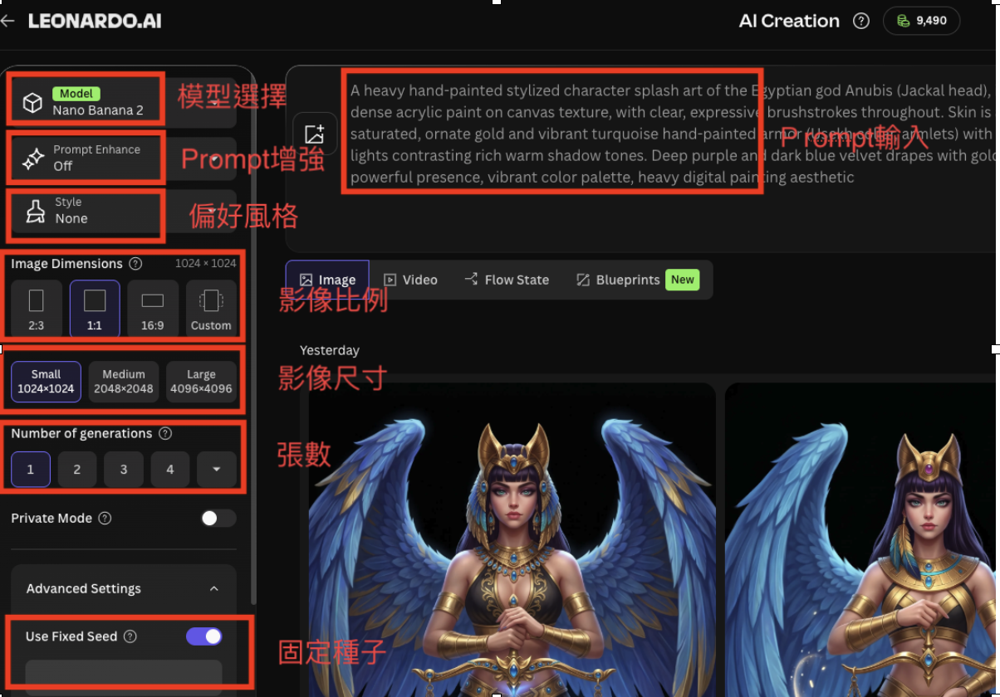
Prompt 提示詞
Prompt 越早寫到的描述，在生成的圖片中越容易被凸顯，所以要把想強調的主體描述寫在前面。
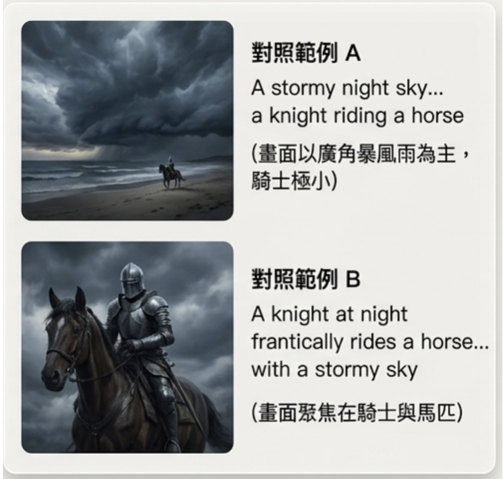
Image Guidance 參照圖引導
用一張參照圖引導生成,風格上會更接近,建議多加利用此功能以貼近公司風格

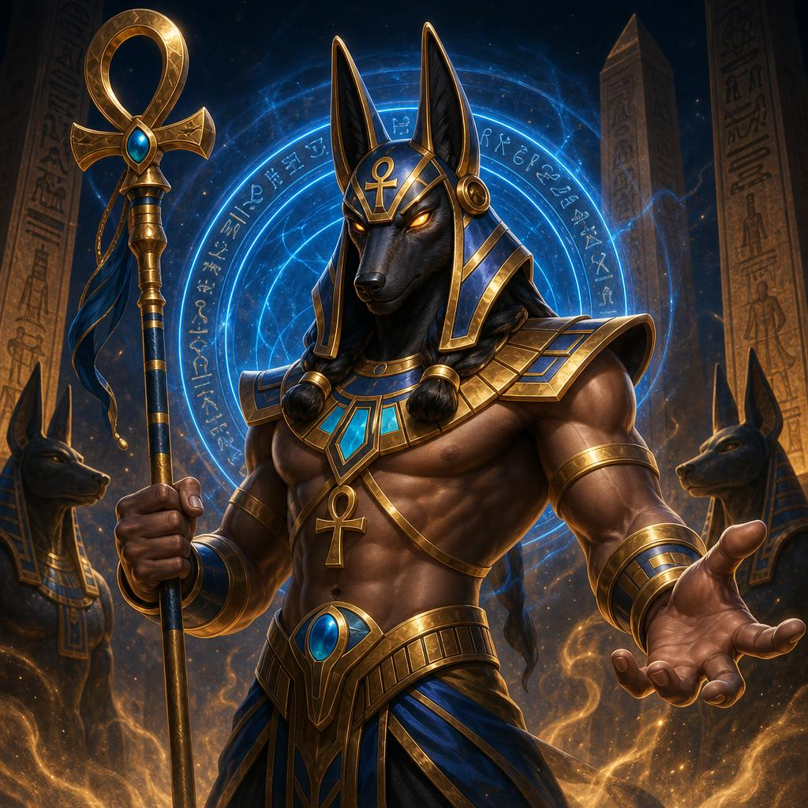
Prompt 範例
大家可以依照需求打入更多的元素
🎬Video 影片
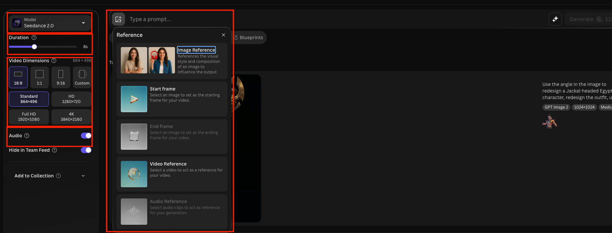
- Model：多款模型供選擇，不會錯過當前強勢模型，模型選擇待測試後補充
- Duration：影片長度
- Video Dimensions：影片比例、尺寸
- Audio：是否有音效
- Reference：
- Image Reference：透過照片作為參考
- Start frame：提供影片一幀作為開始
- End frame：提供影片最後一幀作為結束
- Video Reference：提供完整影片做參考
- Audio Reference：提供完整聲音做參考
🧊3D
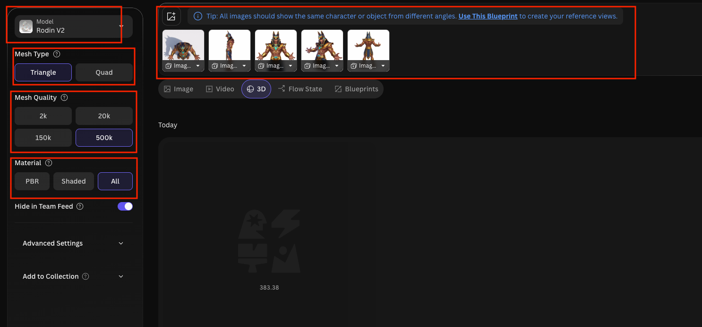
- Model：目前僅一款
- Mesh Type：網格種類，Triangle 是產生三角形面，幾何細節較豐富；Quad 是產生四邊形面，表面較平滑
- Mesh Quality：網格密度，可以根據實際應用選擇合適的密度，避免運算慢、檔案大
- Material：外觀。展示選 Shaded，預覽效果通常最好；未來可能匯入 Blender、Unity 或 Unreal 繼續編輯，選 PBR；不確定用途，選 All，檔案會較大
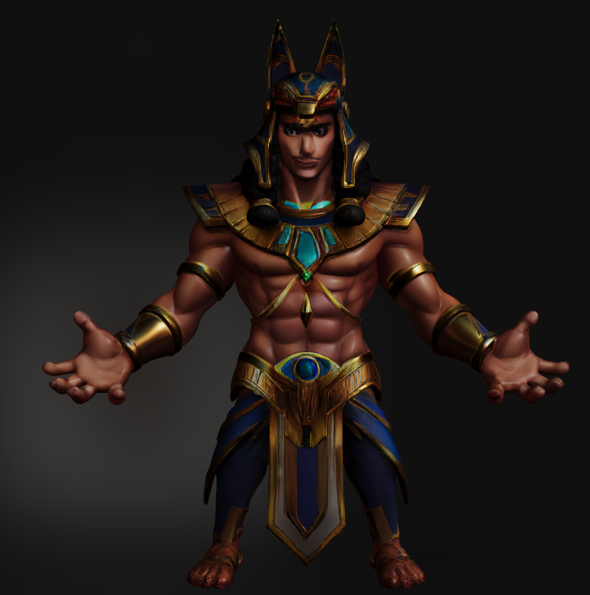
實作的話需要先透過 3D Reference View Creator 這個 Blueprint 做出多視角圖。
目前因為是新功能，做出來的效果臉部不像、身體比例也不對，暫時不建議使用。
🧩Blueprint 流程規劃
可以直接使用別人整套設定好的流程來生成最終作品。
與 Reference 不同的地方在於：Blueprint 是直接制定好每個步驟做了哪些事情，是完整的流程，而非單張參照。
目前僅能使用官方提供的，不能自己建立。
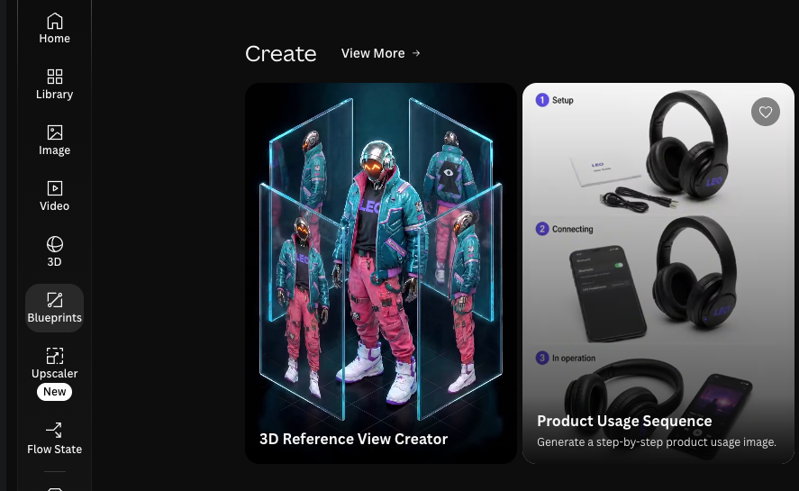
🔍Upscaler 放大 / 提升細節
- Upscaler Type：分為 Realistic（寫實） 與 Artistic（藝術）。官方建議 2D 風格的圖片選用 Artistic。
- 放大倍率（Upscale Multiplier）：最高可將解析度放大至 2 倍。
- Creativity Strength：平衡「提示詞的準確度」與「畫面的美感／豐富度」。越低越遵照提示詞，越高越有創意。
- Upscaler：
- 你的 AI 圖有雜訊、顆粒、小毛病要清 → Pro
- 圖本身已經乾淨，只是要衝到最高解析度、最多細節 → Ultra
- 省點數 / 隨便看看 → Legacy
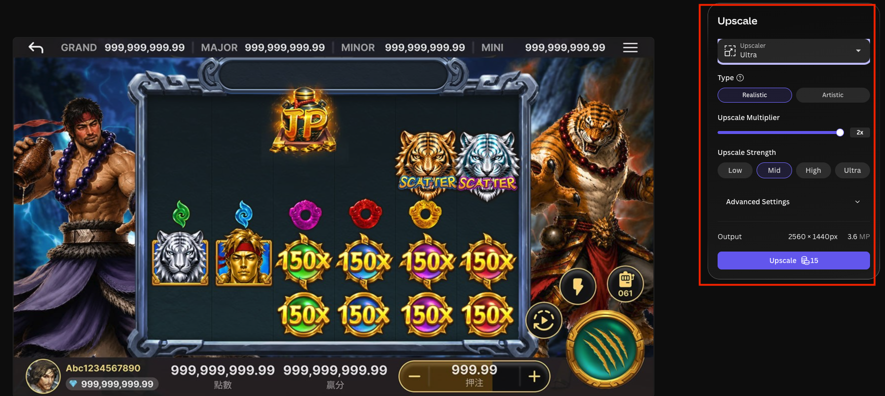
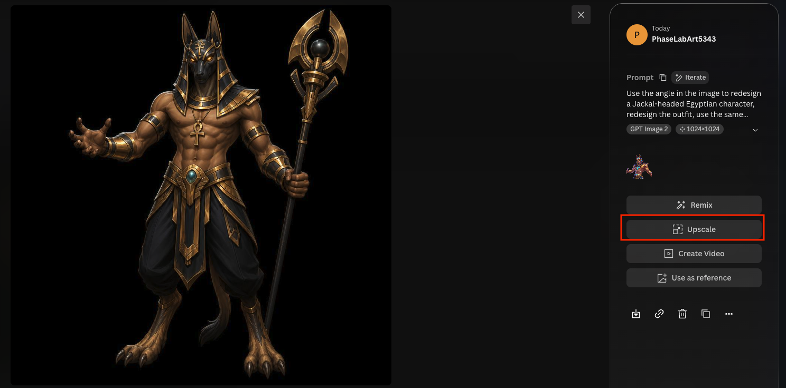
🌊Flow State
- 適合前期沒想法時，用來找到自己喜歡的風格。
- 根據風格產出不同的圖片作為參考，點擊 More Like This，接下來產生的圖片會更接近那張圖片。
- 此功能需要花錢：當滑過越多圖片，會扣一些費用。
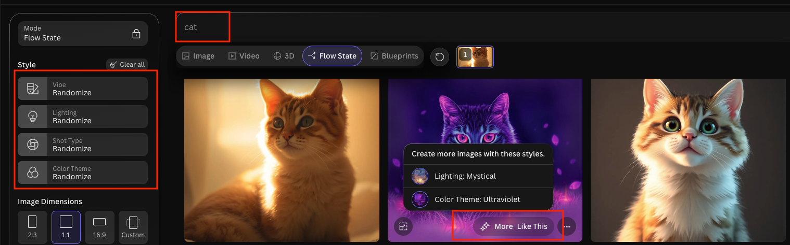